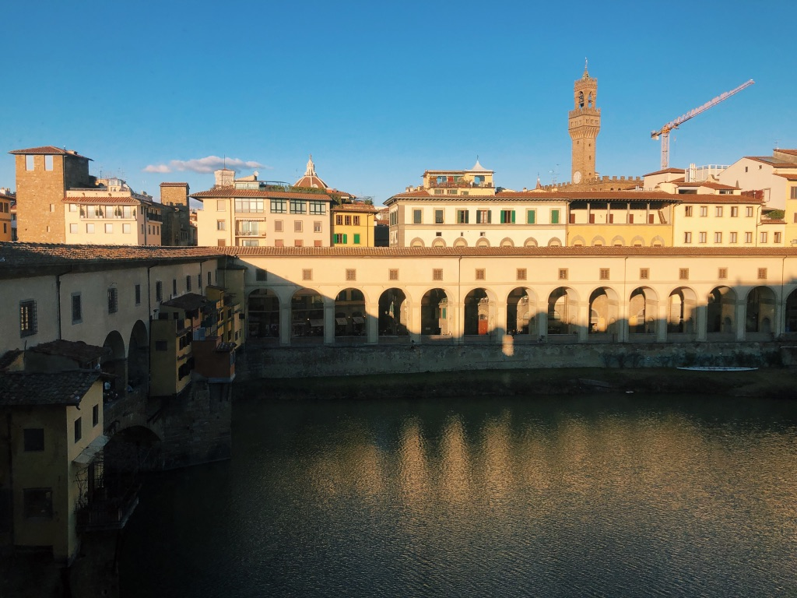

Enjoy spectacular views
Florence is known for its architecture and cultural sites. During my semester in Florence, I learned about the city’s unique history by exploring its buildings, museums, and art exhibits. Florence is so special as its one-of-a-kind views and landscapes complement cultural sites. Some of my favorite memories were made while enjoying the beautiful views. Included are views I enjoyed around the city.
Featured Views


